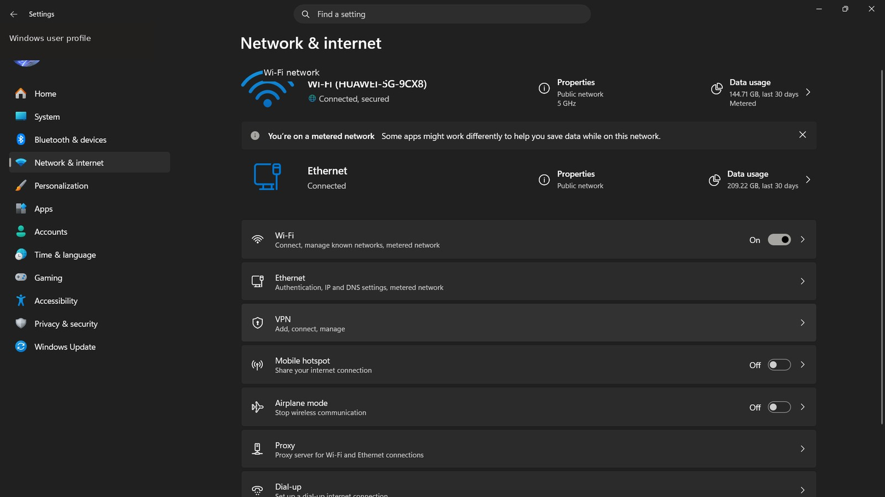
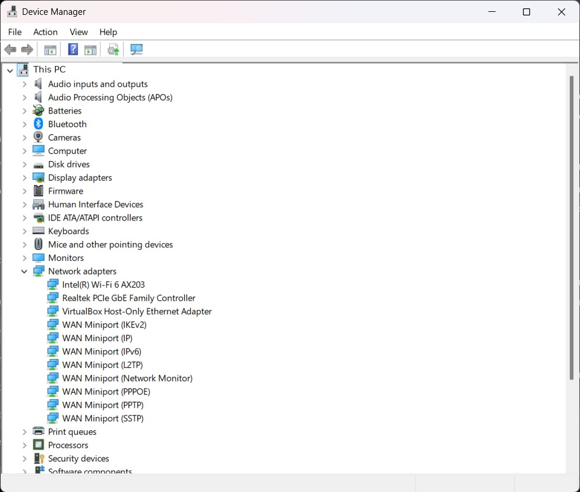

No Internet
2 Check network settings.
Open Settings → Network & Internet. Make sure Wi-Fi or Ethernet is enabled and Airplane mode is off.


What to check:
- Open Settings → Network & internet.
- Confirm Wi-Fi/Ethernet is enabled.
- Make sure Airplane mode is off.